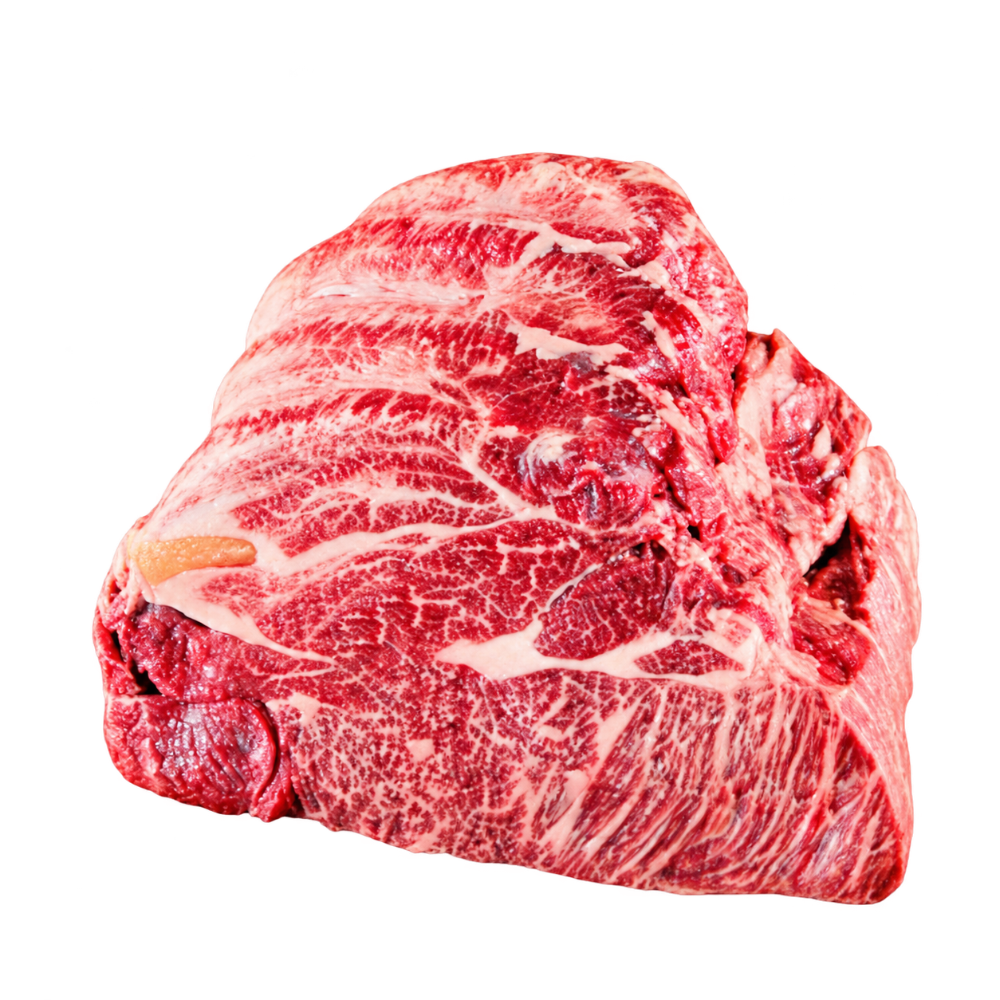

01
DISTRIBUTION

식육유통
국내외 식육을 선별하고 공급합니다. 필요한 부위와 제품을 우육·돈육 목록에서 찾아보세요.
식육유통 사업 자세히 ↗MEAT DISTRIBUTION & PROCESSING
식육유통 · 식육가공 · 양념가공 · 쇼핑몰
푸드아이·써브엠의 사업과 제품을 만나보세요.

02 / MEAT PROCESSING
식육가공 · 양념가공
제품을 만드는 현장으로 이어집니다.

01 / 03 스크롤로 장면을 넘겨보세요 ↓
제품으로 바로 가기 ↘01 / OUR COLLECTION
전체 제품 77건 ↗부위와 규격으로 찾고,
사양을 비교한 뒤 문의하세요.

부위별 우육 제품을 살펴보세요.

한돈·수입육의 원문 사양을 확인하세요.

양념육의 크기와 포장 구성을 비교하세요.

선물세트 구성과 제품 사양을 확인하세요.
우육부터 선물세트까지, 다양한 제품을 만나보세요.
제품 3개 나란히 비교하기 ↗02 / OUR BUSINESS
사업영역 전체 보기 ↗푸드아이·써브엠이 하는 일, 한 장면씩 만나보세요.
DISTRIBUTION
국내외 식육을 선별하고 공급합니다. 필요한 부위와 제품을 우육·돈육 목록에서 찾아보세요.
식육유통 사업 자세히 ↗PROCESSING
고객의 요구에 맞춘 다양한 식육 가공을 소개합니다. 가공 가능 범위와 조건은 문의 시 확인해 주세요.
식육가공 사업 자세히 ↗SEASONED MEAT

자체 양념을 활용한 우육·돈육 제품을 소개합니다. 기존 등록 제품의 크기와 포장 구성을 확인할 수 있습니다.
양념가공 사업 자세히 ↗ONLINE BUSINESS
온라인 채널을 통한 판매 사업입니다. 기존 홈페이지에 소개된 채널과 사업 설명을 확인해 보세요.
쇼핑몰 사업 자세히 ↗03 / BEHIND THE PRODUCT
시설·설비 전체 보기 ↗가공하고, 포장하고, 보관하는 공간.
기존 홈페이지에 공개된 현장을 소개합니다.
04 / OUR STORY
양질의 상품, 합리적인 가격, 필요한 시기의 공급.
기존 인사말에 담긴 약속과 회사가 걸어온 기록을 만나보세요.
LET’S WORK TOGETHER
품목·규격·예상 물량을 정리해 문의할 수 있습니다.